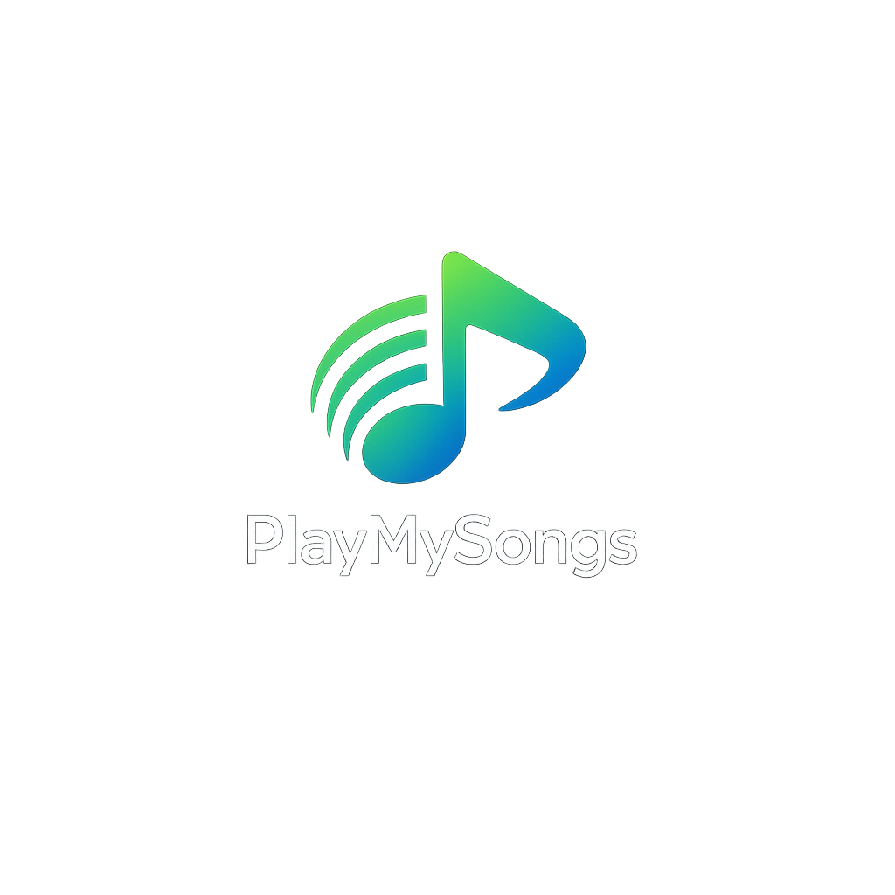

Sua biblioteca musical em um só lugar
Pesquise músicas rapidamente e cadastre novas faixas de forma simples. Interface leve, direta e pronta para evoluir depois.

Pesquise músicas rapidamente e cadastre novas faixas de forma simples. Interface leve, direta e pronta para evoluir depois.